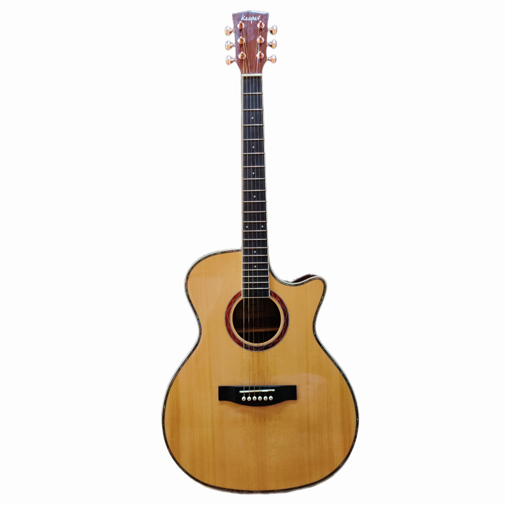
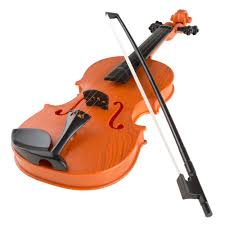

Piano
The piano produces warm, expressive tones that can shift from gentle and emotional to powerful and dramatic. Its wide range and ability to play melody and harmony together make it one of the most versatile instruments in music.

Guitar
The guitar blends rhythm and melody effortlessly, offering bright strums, soft fingerpicking, and energetic riffs. Its sound adapts to almost any genre, giving it a unique emotional quality shaped entirely by a player's touch.

Violin
The violin's voice-like tone gives it an emotional, singing quality that stands out in both classical and modern music. Its ability to move smoothly between soft, delicate notes and intense, dramatic highs makes it deeply expressive.